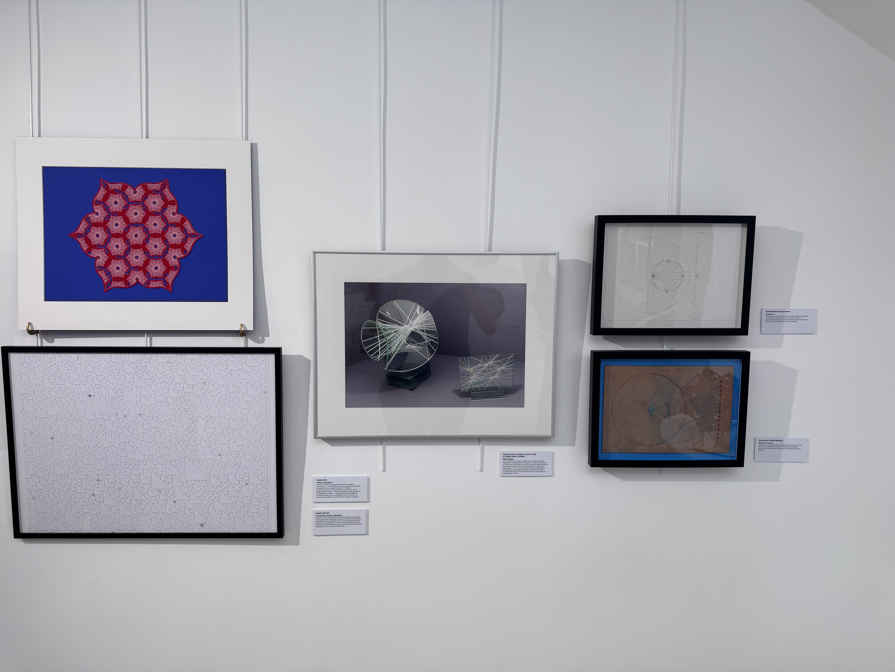
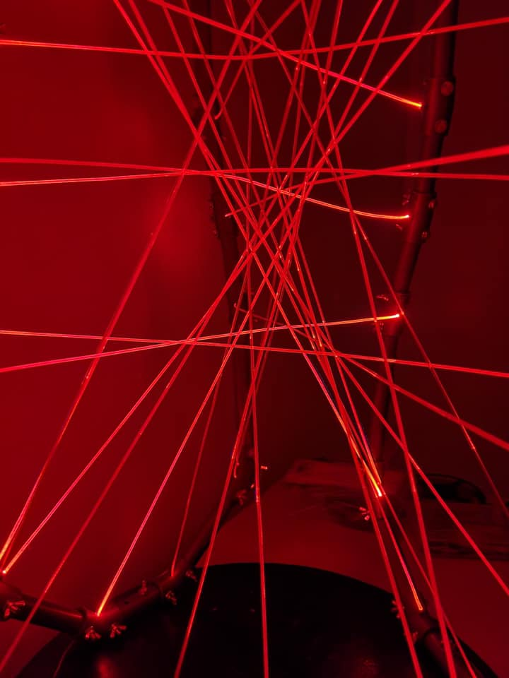
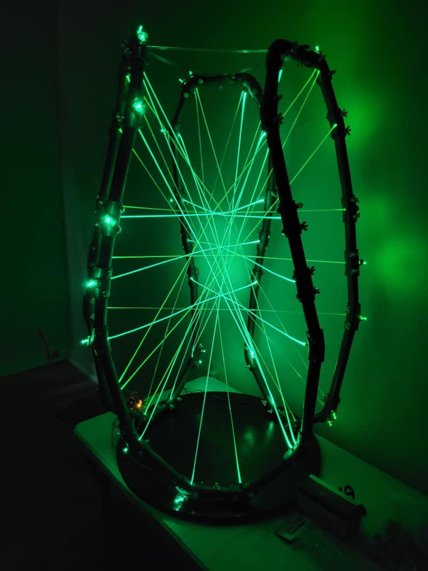
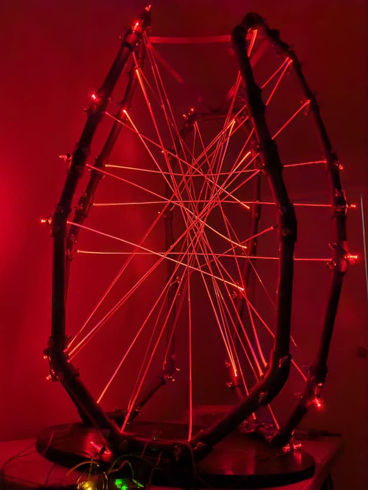
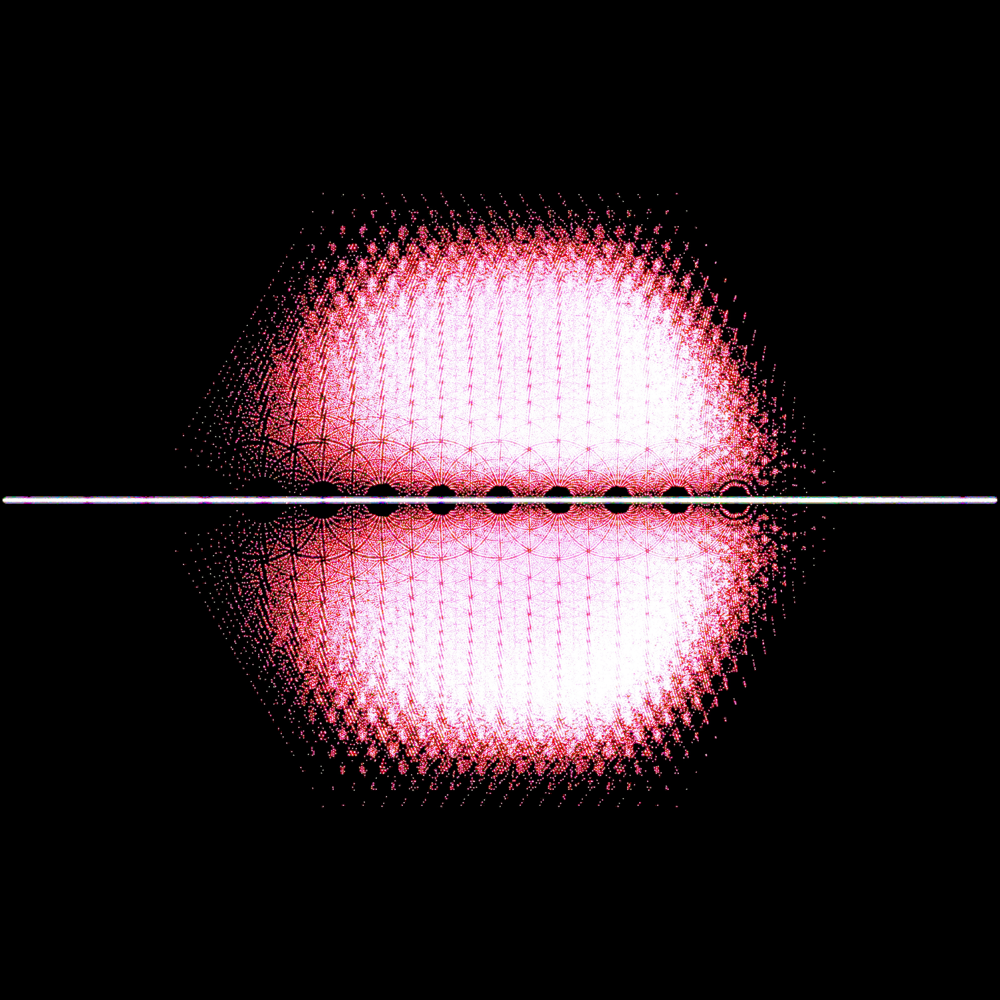
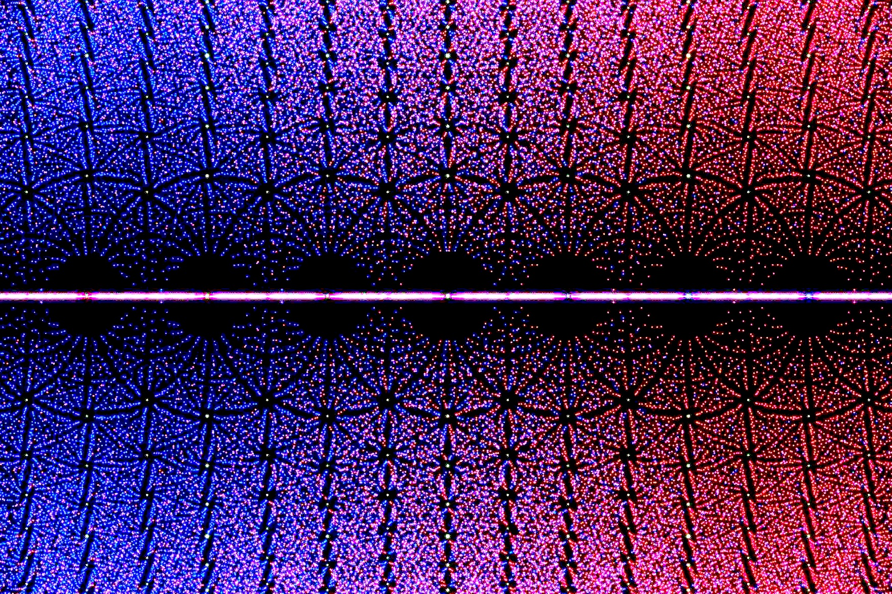
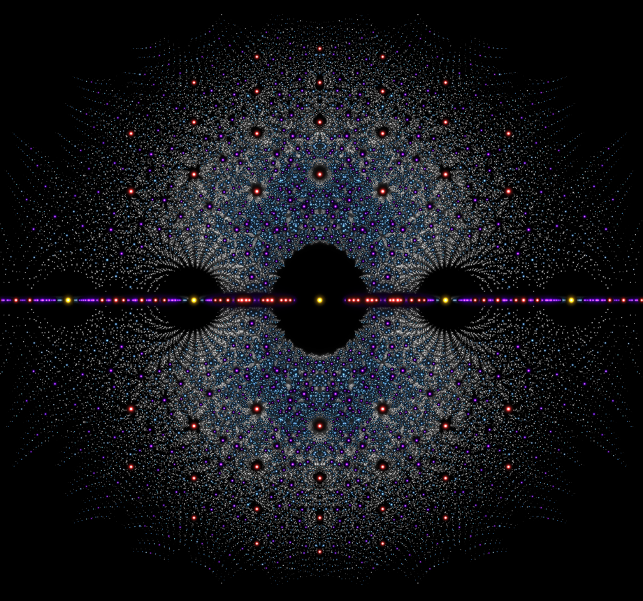

Art
In this page we include images and short descriptions of published and exhibited mathematical art from within the approved review period. I reflect on this in more detail in Section 3.
**Indicates Undergraduate Collaborator**
Click the images to download a full-size version.
Cubic Surface


Installation view, Maison Poincaré, Paris.
A joint creation with Steve Trettel and Claudio Gómez-Gonzáles, this piece depicts how a cubic surface arises as the blowup of six points on the plane. The artpiece is an artistic rendition of an interactive app we designed illustrating the same mathematical phenomenon. The artwork is being exhibited at Creation: Between Art and Mathematics at the Maison Poincaré museum in Paris, France.
Twenty-Seven



A multimedia sculpture created jointly with **Daniel Rostamloo**, this piece also explores cubic surfaces, this time focusing on the 27 lines each cubic surface contains. We hoped to artistically represent the mathematical fact that a cubic surface is determined by its 27 lines. To do this, we left the interior empty except for the lines, letting our minds fill in the gaps, intuiting the curvature of the surface into which the linear skeleton is embedded. 27 was shown at the 2023 Annual Meeting of the German Mathematical Society, published in w/k - Between Science and Art, and is currently searching for a permanent home.
Click here to see a video which moves the viewer through the sculpture and here to go to the website for the artwork.
Bohemian Eigenvalue Starscapes


This project, created jointly with St. Lawrence alumnus **Eliza Brown**, explores the aesthetic implications of the beautiful interaction between linear algebra and number theory through the theory of eigenvalues. It was shown at the 2024 Joint Mathematics Meetings Art Exhibition in San Francisco, California.
Rigid Algebraic Starscapes


Canvas prints of 4 starscapes which were exhibited at two mathematical art exhibitions.
Created jointly with **Candyce Xu**, these works explore visual patterns arising from algebraic integers and rigidity phenomena in algebraic number theory. The resulting images were exhibited at the 2022 MAA Golden Section Art Show and the 2023 Bridges Math Art in Halifax, Nova Scotia. They also appeared as the cover art for the Journal of Mathematics and the Arts.